02-6-mysql备份方案
--
为什么于超老师要给大家讲mysql备份？
先看上面两张图。。
1.为什么要备份
运维是干什么的？
- 保护服务器数据安全
- 维护公司运维资产7*24小时运转
企业真实案件：
https://www.leiphone.com/category/sponsor/Isb7Smi17CHBTxVF.html
企业丢了数据，就等于失去了商机、客户、产品、甚至倒闭。
在各式各样的数据中，数据库的数据更是核心之核心，当然其他各式各样的如静态文件数据，也很重要，也会通过其他的备份方式来保证安全。
2.备份恢复的职责
1. 备份、恢复的策略
备份周期、备份工具、备份方式、数据恢复方式
2.日常备份检查
日志、备份数据
3.定期恢复数据演练
4.数据故障时，利用现有的资源，快速恢复
5.数据迁移，数据库升级。
3.备份工具
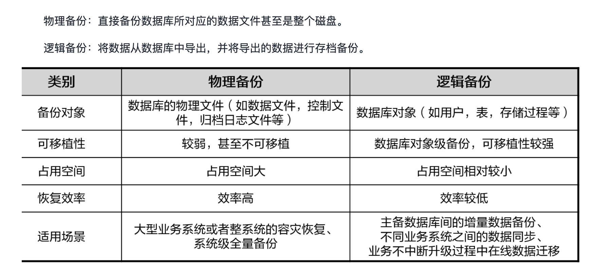
逻辑备份
把数据库、表，以SQL语句的形式，输出为文件的备份过程，这种方式称之为逻辑备份。
但是这种方式效率并不高，以SQL导出，在海量数据下，例如几十G的场景，备份、恢复的时间都会过长。
因此还会有其他备份方案。
mysqldump
mysqlbinlog
mydumper
binlog2sql
物理备份
https://www.percona.com/software/mysql-database/percona-xtrabackup
如何选
100G数据以内，逻辑备份没问题，服务器配置要跟上
100G 以上，建议物理备份
4.mysqldump备份
mysqldump备份语法
Mysqldump -u用户名 -p密码 参数 数据库名 > 数据备份文件
mysql自带的备份工具，可以实现本地备份，远程备份
mysqldump命令备份过程，实际上是把数据库、表，以SQL语句的形式，输出为文件的备份过程，这种方式称之为逻辑备份。
但是这种方式效率并不高，以SQL导出，在海量数据下，例如几十G的场景，备份、恢复的时间都会过长。
因此还会有其他备份方案。
4.1 mysqldump连接参数
-u mysql用户名
-p mysql用户密码
-S mysql本地socket文件
-h 指定主机地址
-P 指定mysql端口
4.2 mysqldump备份参数
可以利用如下语句，实现数据库的数据、结构、很实用的技巧。
全量备份
--all--database，-A 转储所有数据库中的所有表。
[root@db-51 ~]#mysqldump -uroot -pwww.yuchaoit.cn -A > /mysql_backup/all_db.sql
mysqldump: [Warning] Using a password on the command line interface can be insecure.
指定数据库
---database，-B
转储几个数据库。
通常情况，mysqldump将命令行中的第1个名字参量看作数据库名，后面的名看作表名。
使用该选项，它将所有名字参量看作数据库名。
备份命令，尽量携带-B参数，会让sql更加完整
-B可以跟上多个数据库名，同时备份多个库
尽量结合gzip命令压缩
指定备份库，以及所有数据
[root@db-51 /opt]#mysqldump -uroot -pwww.yuchaoit.cn -B world employees > /mysql_backup/world_employess.sql
mysqldump: [Warning] Using a password on the command line interface can be insecure.
检查
[root@db-51 /opt]#ll /mysql_backup/ -h
total 323M
-rw-r--r-- 1 root root 162M Jul 21 17:37 all_db.sql
-rw-r--r-- 1 root root 161M Jul 21 17:36 world_employess.sql
备份单个数据表
这里不能加上-B参数了，这是指定数据库的作用
单独指定备份某个table
# 备份salaries工资表
root@db-51 /opt]#mysqldump -uroot -pwww.yuchaoit.cn employees salaries > /mysql_backup/employees_salaries.sql
mysqldump: [Warning] Using a password on the command line interface can be insecure.
[root@db-51 /opt]#
[root@db-51 /opt]#ll /mysql_backup/ -h
total 433M
-rw-r--r-- 1 root root 162M Jul 21 17:37 all_db.sql
-rw-r--r-- 1 root root 111M Jul 21 17:40 employees_salaries.sql
-rw-r--r-- 1 root root 161M Jul 21 17:36 world_employess.sql
备份多个表
# 备份库下的多个表
[root@db-51 /opt]#mysqldump -uroot -pwww.yuchaoit.cn world city country > /mysql_backup/world_city_country.sql
mysqldump: [Warning] Using a password on the command line interface can be insecure.
[root@db-51 /opt]#
[root@db-51 /opt]#ll /mysql_backup/ -h
total 434M
-rw-r--r-- 1 root root 162M Jul 21 17:37 all_db.sql
-rw-r--r-- 1 root root 111M Jul 21 17:40 employees_salaries.sql
-rw-r--r-- 1 root root 214K Jul 21 17:48 world_city_country.sql
-rw-r--r-- 1 root root 161M Jul 21 17:36 world_employess.sql
通过sql可以看出，整个过程是
- 如果该表存在，则删除
- 创建table
- 锁表，防止数据写入
- 数据插入
- 解锁表
grep -Ev '#|\*|--|^$' /mysql_backup/world_city_country.sql
只要表结构，不要数据
有些情况下会只需要表结构，不要数据，命令如下
--no-data，-d
不写表的任何行信息。
如果你只想转储表的结构这很有用。
# 备份world库下，所有的表结构
mysqldump -uroot -pwww.yuchaoit.cn -d world > /mysql_backup/world_all_table_no_data.sql
# 只有建表语句而已了
grep -Ev '#|\*|--|^$' /mysql_backup/world_all_table_no_data.sql
# 单独备份某个表的结构
mysqldump -uroot -pwww.yuchaoit.cn -d world city > /mysql_backup/world_city_no_data.sql
grep -Ev '#|\*|--|^$' /mysql_backup/world_city_no_data.sql
只要表数据，不要结构
--no-create-info，-t
不写重新创建每个转储表的CREATE TABLE语句。
# 只要city表的数据
mysqldump -uroot -pwww.yuchaoit.cn -t world city > /mysql_backup/world_city_only_data.sql
grep -Ev '#|\*|--|^$' /mysql_backup/world_city_only_data.sql
备份且压缩数据
对于数据库有大量数据表，以及信息，导出的备份文件，最好是压缩后的，节省磁盘。
mysqldump -uroot -pwww.yuchaoit.cn employees departments | gzip > /mysql_backup/departments.sql.gz
结合Binlog的备份参数
--master-data[=value]
该选项将二进制日志的位置和文件名写入到输出中。
该选项要求有RELOAD权限，并且必须启用二进制日志。
如果该选项值等于1，位置和文件名被写入CHANGE MASTER语句形式的转储输出，如果你使用该SQL转储主服务器以设置从服务器，从服务器从主服务器二进制日志的正确位置开始。
如果选项值等于2，CHANGE MASTER语句被写成SQL注释。
--single-transaction
一般和--master-data=2 结合使用，保证所有库、表的一致性。
5.binlog日志
binlog是mysql一大重点，Binlog是一个二进制格式的文件，用于记录用户对数据库更新的SQL语句信息
例如更改数据库库表和更改表内容的SQL语句都会记录到binlog里，但是对库表等内容的查询则不会记录到日志中。
记录
DML，insert update，delete
DDL，create drop，alter，truncate
DCL，grant revoke
binlog的作用
当有数据写入到数据库时，还会同时把更新的SQL语句写入到对应的binlog文件里，这个文件就是上文所说的binlog文件。
配置binlog
mysql> select @@log_bin;
+-----------+
| @@log_bin |
+-----------+
| 0 |
+-----------+
1 row in set (0.00 sec)
未开启
查看mysql关于bin_log的变量参数
mysql> show variables like '%log_bin%';
+---------------------------------+-------+
| Variable_name | Value |
+---------------------------------+-------+
| log_bin | OFF |
| log_bin_basename | |
| log_bin_index | |
| log_bin_trust_function_creators | OFF |
| log_bin_use_v1_row_events | OFF |
| sql_log_bin | ON |
+---------------------------------+-------+
6 rows in set (0.00 sec)
查看binlog的配置信息
mysql> select @@log_bin_basename;
+--------------------+
| @@log_bin_basename |
+--------------------+
| NULL |
+--------------------+
1 row in set (0.00 sec)
mysql> select @@server_id;
+-------------+
| @@server_id |
+-------------+
| 0 |
+-------------+
1 row in set (0.01 sec)
开启binlog
[root@db-51 /mysql_backup]#cat /etc/my.cnf
[mysqld]
server_id=51 # 主机id，必须要区别于其他机器
# 开启binlog的参数，以及日志文件路径，最终格式是如 mysql-bin.000001
log_bin=/www.yuchaoit.cn/mysql_3306/logs/mysql-bin
character_set_server=utf8mb4
port=3306
user=mysql
basedir=/opt/mysql
datadir=/www.yuchaoit.cn/mysql_3306
socket=/tmp/mysql.sock
[mysql]
socket=/tmp/mysql.sock
[root@db-51 /mysql_backup]#
重启，再次查看配置
[root@db-51 /mysql_backup]#mkdir /www.yuchaoit.cn/mysql_3306/logs/
[root@db-51 /mysql_backup]#chown -R mysql.mysql /www.yuchaoit.cn/
[root@db-51 /mysql_backup]#systemctl restart mysqld
[root@db-51 /mysql_backup]#mysql -uroot -pwww.yuchaoit.cn
mysql: [Warning] Using a password on the command line interface can be insecure.
Welcome to the MySQL monitor. Commands end with ; or \g.
Your MySQL connection id is 2
Server version: 5.7.28-log MySQL Community Server (GPL)
Copyright (c) 2000, 2019, Oracle and/or its affiliates. All rights reserved.
Oracle is a registered trademark of Oracle Corporation and/or its
affiliates. Other names may be trademarks of their respective
owners.
Type 'help;' or '\h' for help. Type '\c' to clear the current input statement.
mysql> show variables like '%log_bin%';
+---------------------------------+--------------------------------------------------+
| Variable_name | Value |
+---------------------------------+--------------------------------------------------+
| log_bin | ON |
| log_bin_basename | /www.yuchaoit.cn/mysql_3306/logs/mysql-bin |
| log_bin_index | /www.yuchaoit.cn/mysql_3306/logs/mysql-bin.index |
| log_bin_trust_function_creators | OFF |
| log_bin_use_v1_row_events | OFF |
| sql_log_bin | ON |
+---------------------------------+--------------------------------------------------+
6 rows in set (0.00 sec)
查看日志路径
[root@db-51 /mysql_backup]#ls /www.yuchaoit.cn/mysql_3306/logs/
mysql-bin.000001 mysql-bin.index
[root@db-51 /mysql_backup]#cat /www.yuchaoit.cn/mysql_3306/logs/mysql-bin.index
/www.yuchaoit.cn/mysql_3306/logs/mysql-bin.000001
binlog内容的格式
事件event记录方式
1. 事件描述
时间戳
server_id
加密方式
开始位置 start_pos
结束位置 end_pos
2.事件内容
修改类的操作，SQL语句，数据行的变化
重点，使用binlog主要关注
start_pos
end_pos
事件内容
二进制日志事件内容格式
mysql> show variables like '%binlog%';
+--------------------------------------------+----------------------+
| Variable_name | Value |
+--------------------------------------------+----------------------+
| binlog_cache_size | 32768 |
| binlog_checksum | CRC32 |
| binlog_direct_non_transactional_updates | OFF |
| binlog_error_action | ABORT_SERVER |
| binlog_format | ROW |
| binlog_group_commit_sync_delay | 0 |
| binlog_group_commit_sync_no_delay_count | 0 |
| binlog_gtid_simple_recovery | ON |
| binlog_max_flush_queue_time | 0 |
| binlog_order_commits | ON |
| binlog_row_image | FULL |
| binlog_rows_query_log_events | OFF |
| binlog_stmt_cache_size | 32768 |
| binlog_transaction_dependency_history_size | 25000 |
| binlog_transaction_dependency_tracking | COMMIT_ORDER |
| innodb_api_enable_binlog | OFF |
| innodb_locks_unsafe_for_binlog | OFF |
| log_statements_unsafe_for_binlog | ON |
| max_binlog_cache_size | 18446744073709547520 |
| max_binlog_size | 1073741824 |
| max_binlog_stmt_cache_size | 18446744073709547520 |
| sync_binlog | 1 |
+--------------------------------------------+----------------------+
22 rows in set (0.01 sec)
这里看到| binlog_format 是ROW
对于DDL、DCL语句，直接将SQL本身记录到binlog中
对于DML : insert、update、delete 受到binlog_format参数控制。
SBR : Statement : 语句模式。之前版本，默认模式
RBR : ROW : 行记录模式。5.7以后，默认模式
MBR : mixed : 混合模式。
查看binlog日志文件情况
查看所有日志文件的信息，二进制日志
mysql> show binary logs;
+------------------+-----------+
| Log_name | File_size |
+------------------+-----------+
| mysql-bin.000001 | 154 |
+------------------+-----------+
1 row in set (0.00 sec)
刷新新日志文件
了解该命令即可，不能随便执行。。
mysql> flush logs;
Query OK, 0 rows affected (0.01 sec)
mysql> flush logs;
Query OK, 0 rows affected (0.00 sec)
mysql> show binary logs;
+------------------+-----------+
| Log_name | File_size |
+------------------+-----------+
| mysql-bin.000001 | 201 |
| mysql-bin.000002 | 201 |
| mysql-bin.000003 | 154 |
+------------------+-----------+
3 rows in set (0.00 sec)
mysql>
查看当前mysql用哪个日志文件
mysql> show master status;
+------------------+----------+--------------+------------------+-------------------+
| File | Position | Binlog_Do_DB | Binlog_Ignore_DB | Executed_Gtid_Set |
+------------------+----------+--------------+------------------+-------------------+
| mysql-bin.000003 | 154 | | | |
+------------------+----------+--------------+------------------+-------------------+
1 row in set (0.00 sec)
模拟binlog记录
1.主动写入新数据
mysql> show master status;
+------------------+----------+--------------+------------------+-------------------+
| File | Position | Binlog_Do_DB | Binlog_Ignore_DB | Executed_Gtid_Set |
+------------------+----------+--------------+------------------+-------------------+
| mysql-bin.000003 | 154 | | | |
+------------------+----------+--------------+------------------+-------------------+
1 row in set (0.00 sec)
mysql> create database chaoge_linux;
Query OK, 1 row affected (0.00 sec)
mysql> show master status;
+------------------+----------+--------------+------------------+-------------------+
| File | Position | Binlog_Do_DB | Binlog_Ignore_DB | Executed_Gtid_Set |
+------------------+----------+--------------+------------------+-------------------+
| mysql-bin.000003 | 337 | | | |
+------------------+----------+--------------+------------------+-------------------+
1 row in set (0.00 sec)
2.写入表数据
mysql> create table chaoge_linux.students(id int);
Query OK, 0 rows affected (0.00 sec)
mysql> insert into chaoge_linux.students values(1);
Query OK, 1 row affected (0.01 sec)
mysql> show master status;
+------------------+----------+--------------+------------------+-------------------+
| File | Position | Binlog_Do_DB | Binlog_Ignore_DB | Executed_Gtid_Set |
+------------------+----------+--------------+------------------+-------------------+
| mysql-bin.000003 | 785 | | | |
+------------------+----------+--------------+------------------+-------------------+
1 row in set (0.00 sec)
3.确认上述的所有数据创建操作，属于mysql的一个完整事务，到执行commit命令。
mysql> commit;
Query OK, 0 rows affected (0.01 sec)
查看日志事件
mysql> show binlog events in 'mysql-bin.000003';
+------------------+-----+----------------+-----------+-------------+--------------------------------------------+
| Log_name | Pos | Event_type | Server_id | End_log_pos | Info |
+------------------+-----+----------------+-----------+-------------+--------------------------------------------+
| mysql-bin.000003 | 4 | Format_desc | 51 | 123 | Server ver: 5.7.28-log, Binlog ver: 4 |
| mysql-bin.000003 | 123 | Previous_gtids | 51 | 154 | |
| mysql-bin.000003 | 154 | Anonymous_Gtid | 51 | 219 | SET @@SESSION.GTID_NEXT= 'ANONYMOUS' |
| mysql-bin.000003 | 219 | Query | 51 | 337 | create database chaoge_linux |
| mysql-bin.000003 | 337 | Anonymous_Gtid | 51 | 402 | SET @@SESSION.GTID_NEXT= 'ANONYMOUS' |
| mysql-bin.000003 | 402 | Query | 51 | 522 | create table chaoge_linux.students(id int) |
| mysql-bin.000003 | 522 | Anonymous_Gtid | 51 | 587 | SET @@SESSION.GTID_NEXT= 'ANONYMOUS' |
| mysql-bin.000003 | 587 | Query | 51 | 655 | BEGIN |
| mysql-bin.000003 | 655 | Table_map | 51 | 714 | table_id: 108 (chaoge_linux.students) |
| mysql-bin.000003 | 714 | Write_rows | 51 | 754 | table_id: 108 flags: STMT_END_F |
| mysql-bin.000003 | 754 | Xid | 51 | 785 | COMMIT /* xid=15 */ |
+------------------+-----+----------------+-----------+-------------+--------------------------------------------+
11 rows in set (0.00 sec)
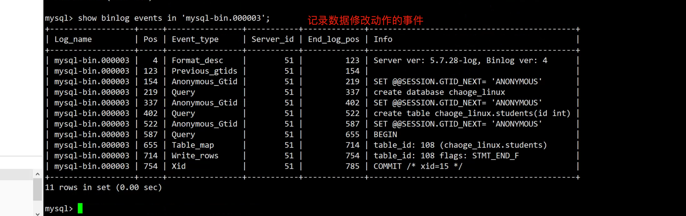
解密查看binlog日志
[root@db-51 /mysql_backup]#mysqlbinlog /www.yuchaoit.cn/mysql_3306/logs/mysql-bin.000003
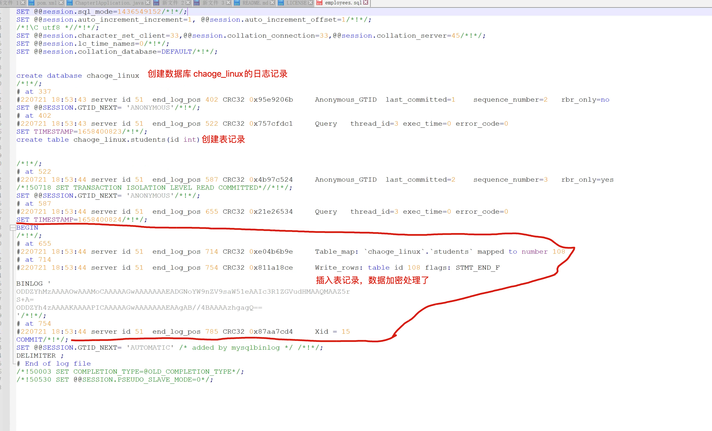
解密日志查看
[root@db-51 /mysql_backup]#mysqlbinlog --base64-output=decode-rows -vv /www.yuchaoit.cn/mysql_3306/logs/mysql-bin.000003
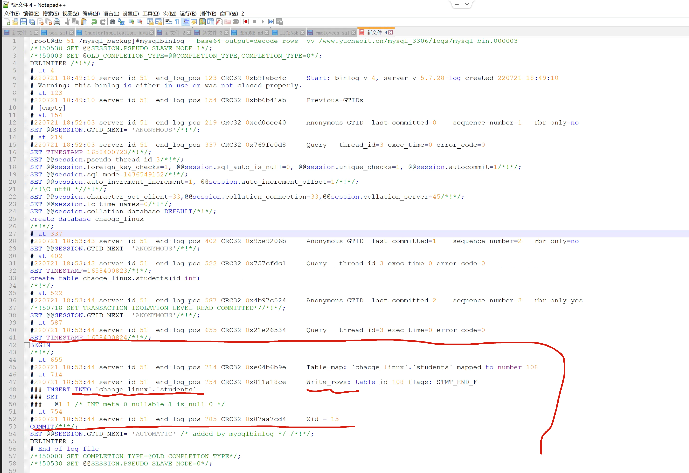
binlog日志截取与恢复实践
1.前提要打开binlog功能
创建、导入数据库等操作，要提前就打开binlog，否则无法记录
2.模拟误删库，恢复数据
模拟误删除库，恢复到删库之前
3.模拟数据误删除
1.确保当前是开启binlog的
mysql> show master status;
+------------------+----------+--------------+------------------+-------------------+
| File | Position | Binlog_Do_DB | Binlog_Ignore_DB | Executed_Gtid_Set |
+------------------+----------+--------------+------------------+-------------------+
| mysql-bin.000003 | 785 | | | |
+------------------+----------+--------------+------------------+-------------------+
1 row in set (0.00 sec)
2.创建库
mysql> create database linux0224;
Query OK, 1 row affected (0.00 sec)
mysql> use linux0224;
Database changed
create table user (
id int(11) not null auto_increment comment 'id',
name varchar(10) not null comment 'name',
age tinyint(4) not null comment 'age',
primary key (id)
) engine=innodb default charset=utf8mb4;
3.写入数据
insert into user(name,age) values
('于超',28),
('郑佳强',22),
('李文杰',24);
4.查看数据
mysql> select * from user;
+----+-----------+-----+
| id | name | age |
+----+-----------+-----+
| 1 | 于超 | 28 |
| 2 | 郑佳强 | 22 |
| 3 | 李文杰 | 24 |
+----+-----------+-----+
3 rows in set (0.00 sec)
5.模拟某个大傻子，误删除了数据，如何恢复？
drop database linux0224;
4.恢复思路
1. 截取从建库到删库之间的所有的binlog
2.先看看当前的binlog
mysql> show master status;
+------------------+----------+--------------+------------------+-------------------+
| File | Position | Binlog_Do_DB | Binlog_Ignore_DB | Executed_Gtid_Set |
+------------------+----------+--------------+------------------+-------------------+
| mysql-bin.000003 | 1795 | | | |
+------------------+----------+--------------+------------------+-------------------+
1 row in set (0.00 sec)
3.找到linux0224库创建的位置
mysql> show binlog events in 'mysql-bin.000003';
找到日志记录，pos值850就是该数据库的创建起点
| mysql-bin.000003 | 850 | Query | 51 | 959 | create database linux0224
4.找到终点，pos值1688
| mysql-bin.000003 | 1688 | Query | 51 | 1795 | drop database linux0224
5.导出创建、删除之间的操作，也就是你要的数据
[root@db-51 ~]#mysqlbinlog --start-position=850 --stop-position=1688 /www.yuchaoit.cn/mysql_3306/logs/mysql-bin.000003 > /tmp/restore_linux0224.sql
6.截取的日志，进行回放，重新开关binlog
# 基于sql_log_bin 参数，临时关闭二进制日志写入，否则会重复加载恢复数据的日志
# 导入数据后，重新打开即可
mysql> set sql_log_bin=0;
Query OK, 0 rows affected (0.00 sec)
mysql> source /tmp/restore_linux0224.sql
mysql> set sql_log_bin=1;
Query OK, 0 rows affected (0.00 sec)
图解binlog截取
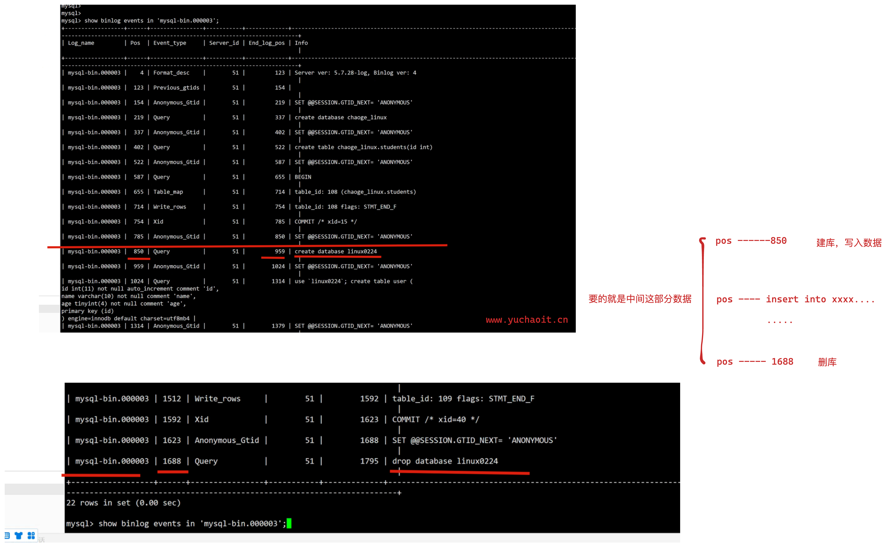
6.恢复更复杂的场景
问题：数据记录在多个binlog里如何恢复
6.1 场景模拟
日志1，mysql-bin.000004
1.基于flush logs；生成新的binlog
2. 创建数据库
mysql> create database lol;
Query OK, 1 row affected (0.00 sec)
mysql> create table lol.tanke(id int);
Query OK, 0 rows affected (0.00 sec)
mysql> show tables from lol;
+---------------+
| Tables_in_lol |
+---------------+
| tanke |
+---------------+
1 row in set (0.00 sec)
mysql> show master status;
+------------------+----------+--------------+------------------+-------------------+
| File | Position | Binlog_Do_DB | Binlog_Ignore_DB | Executed_Gtid_Set |
+------------------+----------+--------------+------------------+-------------------+
| mysql-bin.000003 | 2124 | | | |
+------------------+----------+--------------+------------------+-------------------+
1 row in set (0.00 sec)
3.刷新日志
mysql> flush logs;
Query OK, 0 rows affected (0.00 sec)
mysql> show master status;
+------------------+----------+--------------+------------------+-------------------+
| File | Position | Binlog_Do_DB | Binlog_Ignore_DB | Executed_Gtid_Set |
+------------------+----------+--------------+------------------+-------------------+
| mysql-bin.000004 | 154 | | | |
+------------------+----------+--------------+------------------+-------------------+
1 row in set (0.01 sec)
日志2，mysql-bin.000005
1. 当前日志刷新了，继续写入新日志
show master status;
insert into lol.tanke values(1),(2),(3),(4);
commit;
show master status;
flush logs;
日志3，mysql-bin.000006
1.再来写入数据
show master status;
create table lol.fashi(id int);
insert into lol.fashi values(1),(2),(3),(4),(5);
commit;
show master status;
flush logs;
日志4，误删除数据库lol
1.再来写入数据
show master status;
insert into lol.fashi values(11),(22),(33),(44),(55);
commit;
2. 误删除
mysql>
mysql> drop database lol;
Query OK, 2 rows affected (0.01 sec)
mysql> show master status;
+------------------+----------+--------------+------------------+-------------------+
| File | Position | Binlog_Do_DB | Binlog_Ignore_DB | Executed_Gtid_Set |
+------------------+----------+--------------+------------------+-------------------+
| mysql-bin.000006 | 588 | | | |
+------------------+----------+--------------+------------------+-------------------+
1 row in set (0.00 sec)
6.2 恢复实战
方案1：分段截取
--start-position
--stop-position
方案2：时间戳截取
1. 找创建lol库的时间戳
恢复思路图解
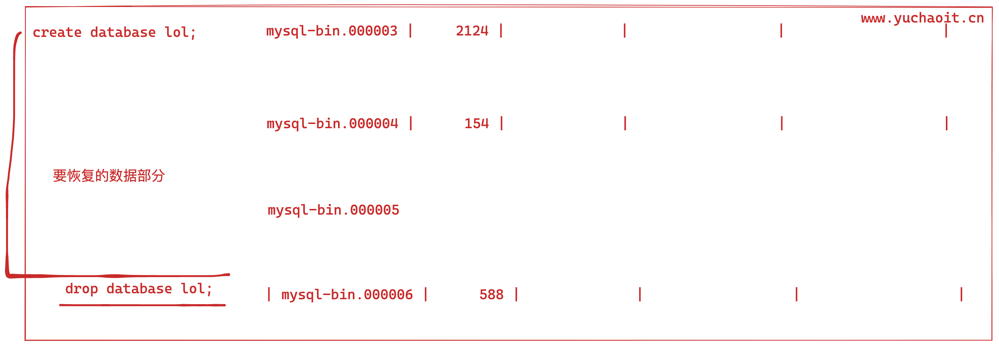
恢复步骤
思路：找到 关于你要恢复的这个lol，数据库，从创建该库，到删除lol之间的记录
1. 基于开始的日志，找pos起点位置
mysql> show binlog events in 'mysql-bin.000003';
| mysql-bin.000003 | 1860 | Query | 51 | 1951 | create database lol |
基于事件，寻找删库的事件pos位置
mysql> show binlog events in 'mysql-bin.000006';
| mysql-bin.000006 | 499 | Query | 51 | 588 | drop database lol
2. 或者基于mysqlbinlog命令，分析二进制日志的 建库lol的时间，到删库之间所有的日志
[root@db-51 ~]#cd /www.yuchaoit.cn/mysql_3306/logs/
[root@db-51 /www.yuchaoit.cn/mysql_3306/logs]#mysqlbinlog --start-position=1860 --stop-position=499 mysql-bin.000003 mysql-bin.000004 mysql-bin.000005 mysql-bin.000006 > /tmp/restore-lol.sql
3.可以解密查看如上截取的日志，能找到最后的插入数据结果即可
[root@db-51 /www.yuchaoit.cn/mysql_3306/logs]#mysqlbinlog --base64-output=decode-rows -vv --start-position=1860 --stop-position=499 mysql-bin.000003 mysql-bin.000004 mysql-bin.000005 mysql-bin.000006 > restore-lol.log
检查恢复结果
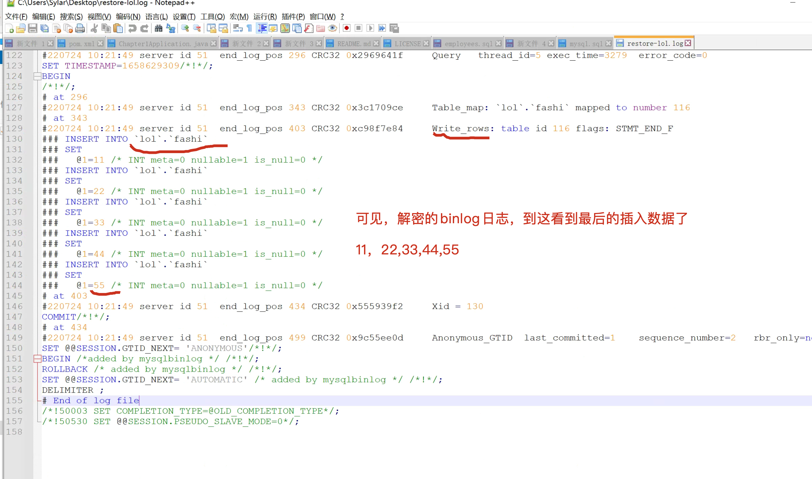
我们要恢复的逻辑是
1. 创建了lol库
2. 创建了 tanke fashi表，以及插入了数据
3. 删除了lol库，到这截止
检查数据，恢复数据
mysql> show databases;
mysql> show master status;
mysql> set sql_log_bin=0;
Query OK, 0 rows affected (0.00 sec)
mysql> source /tmp/restore-lol.sql;
mysql> set sql_log_bin=1;
Query OK, 0 rows affected (0.00 sec)
mysql> select * from lol.fashi;
+------+
| id |
+------+
| 1 |
| 2 |
| 3 |
| 4 |
| 5 |
| 11 |
| 22 |
| 33 |
| 44 |
| 55 |
+------+
10 rows in set (0.00 sec)
就很nice，数据回来了
查看binlog日志记录
mysql> show binlog events; #只查看第一个binlog文件的内容
mysql> show binlog events in 'mysql-bin.000002';#查看指定binlog文件的内容
mysql> show binary logs; #获取binlog文件列表
mysql> show master status； #查看当前正在写入的binlog文件
7.基于GTID的binlog应用
7.1 什么是GTID
从 MySQL 5.6.5 开始新增了一种基于 GTID 的复制方式。
通过 GTID 保证了每个在主库上提交的事务在集群中有一个唯一的ID。
这种方式强化了数据库的主备一致性，故障恢复以及容错能力。
在原来基于二进制日志的复制中，从库需要告知主库要从哪个偏移量pos值进行增量同步，如果指定错误会造成数据的遗漏，从而造成数据的不一致。
借助GTID，在发生主备切换的情况下，MySQL的其它从库可以自动在新主库上找到正确的复制位置，
这大大简化了复杂复制拓扑下集群的维护，也减少了人为设置复制位置发生误操作的风险。
另外，基于GTID的复制可以忽略已经执行过的事务，减少了数据发生不一致的风险。
7.2 什么是事务
为什么数据库需要事务？
- 你表弟向你借500元，你打开APP、爽快的给他转账了，你的卡余额提示少了500
- 你给表弟发了个微信，说，钱打过去了
- 你表弟说：没收到啊哥，你别骗我行吗
- 你钱扣少了，你表弟缺没收到钱，这事办的？咋整
讲道理应该是这样
- 超哥发起转账，转给表弟
- 超哥卡里少了500元
- 表弟卡里多了500元
这三步骤、必然不得出问题，上面的案例，就是这三步发生了问题！
如果有事务、就不会发生这样的事
事务就是
这三件事、三个动作，是一根绳上的蚂蚱，要么都成功，要么都失败
转账要么到表弟账户、要么就转不出去、回到自己卡里
事务的ACID特性
TRANSACTION 事务
Atomicity原子性
原子性强调转账的三个步骤要么成功、要么失败
在一个事务中的所有SQL语句，要么全部执行成功，要么全部失败，即使成功的SQL语句也会被撤销，回到执行之前的状态。
Consistency一致性
一致性是指数据库从一个状态、变为另一个状态
事务开始前、与结束后，数据库的完整性约束没有被破坏。
例如转账，无论成功、或者失败、这500不会多、也不会少
要么超哥卡里扣了500元、表弟多了500元
要么超哥转账失败500元未动、表弟一毛钱也没拿到
这个总和永远是500元，不多也不少
Isolation隔离性
隔离性指的是每个读写事务对其他的事务操作，都是相互隔离不受影响的。
例如同是工商银行
- 超哥转账操作不会影响到小猪佩奇的转账操作
Durability持久性
事务一旦提交后，结果就是永久性生效。
超哥转账500给了表弟，表弟也收到钱了，这件事就结束了，真实生效了。
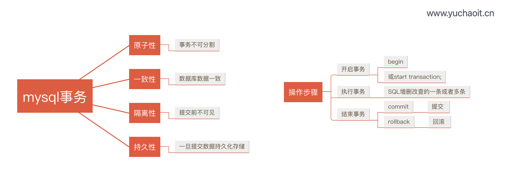
正确事务执行
# 1.创建表
create table linux0224.bank(
name varchar(20),
money decimal(20, 2)
)charset=utf8;
# 2.插入数据
use linux0224;
insert into bank values("于超", 20000),("张飞", 6000);
# 3.执行事务，如存取钱的更新，update
begin;
update bank set money=money-3000 where name="于超";
update bank set money=money+3000 where name="张飞";
commit;
# 4.查询价格
mysql> select * from bank;
+--------+----------+
| name | money |
+--------+----------+
| 于超 | 17000.00 |
| 张飞 | 9000.00 |
+--------+----------+
2 rows in set (0.00 sec)
错误SQL事务执行
# 故意的SQL写错，查看在一个事务下的SQL执行状态
begin;
update bank set money=money-3000 where name="于超";
update bank ssssssssset money=money+3000 where name="张飞";
rollback;
# 事务特性，实现了数据正确性，一致性
mysql>
mysql> select * from bank;
+--------+----------+
| name | money |
+--------+----------+
| 于超 | 17000.00 |
| 张飞 | 9000.00 |
+--------+----------+
2 rows in set (0.00 sec)
mysql默认的事务规则
在MySQL数据库中，事务默认是会自动提交的，也就是说，如果没有用 begin ... commit 来显式提交事务的话，MySQL 会认为每一条SQL语句都是一个事务，也就是每一条SQL语句都会自动提交。
可以基于mysqlbinlog去分析日志，发现每一个语句都是事务操作。
语法规则
在 MYSQL 中事务处理主要有两种方法：
1）用 BEGIN, ROLLBACK, COMMIT来实现
BEGIN 开始一个事务
ROLLBACK 事务回滚
COMMIT 事务确认
mysql> show variables like '%commit%';
+-----------------------------------------+-------+
| Variable_name | Value |
+-----------------------------------------+-------+
| autocommit | ON | #
| binlog_group_commit_sync_delay | 0 |
| binlog_group_commit_sync_no_delay_count | 0 |
| binlog_order_commits | ON |
| innodb_api_bk_commit_interval | 5 |
| innodb_commit_concurrency | 0 |
| innodb_flush_log_at_trx_commit | 1 |
| slave_preserve_commit_order | OFF |
+-----------------------------------------+-------+
8 rows in set (0.00 sec)
7.3 GTID长啥样
GTID (Global Transaction ID) 是对于一个已提交事务的编号，并且是一个全局唯一的编号。
GTID 实际上 是由 UUID+TID 组成的。
其中 UUID 是一个 MySQL 实例的唯一标识。
TID 代表了该实例上已经提交的事务数量，并且随着事务提交单调递增。
下面是一个GTID的具体形式：
形式语法
GTID = source_id ：transaction_id
具体结果
2E11FA47-61CA-11E1-9E33-C70AA9429562:28
在上面的定义中，每一个GTID均代表一个数据库的事务，等号右边的source_id表示执行事务的源服务器主库的uuid（也就是server_uuid）
而transaction_id是一个从1开始的自增的序列号，表示在这个主库上执行的第n个事务。
只要保证每台数据库的server_uuid全局唯一，以及每台数据库生成的transaction_id自身唯一，就能保证GTID的全局唯一性。
server_uuid是什么
还记得以前我们在my.cnf中配置了一个参数
server_id=5
并且超哥要求master、slave的server_id必须唯一
为什么换成server_uuid
MySQL 5.6用128位的server_uuid代替了原本32位的server_id的大部分功能。
原因很简单，server_id依赖于my.cnf的手工配置，有可能会产生冲突，而自动产生128位uuid的算法可以保证所有的MySQL uuid都不会发生冲突。
在进行首次启动时，MySQL会自动生成一个server_uuid，并且保存到数据库目录下的auto.cnf文件里，这个文件目前存在的唯一目的就是保存server_uuid。
在MySQL再次启动时其会读取auto.cnf文件，继续使用上次生成的server_uuid。
7.4 开启uuid
mysql> show variables like '%GTID%';
+----------------------------------+-----------+
| Variable_name | Value |
+----------------------------------+-----------+
| binlog_gtid_simple_recovery | ON |
| enforce_gtid_consistency | OFF |
| gtid_executed_compression_period | 1000 |
| gtid_mode | OFF |
| gtid_next | AUTOMATIC |
| gtid_owned | |
| gtid_purged | |
| session_track_gtids | OFF |
+----------------------------------+-----------+
8 rows in set (0.00 sec)
开启GTID功能

vim /etc/my.cnf 加入
[root@db-51 ~]#cat /etc/my.cnf
[mysqld]
gtid-mode=ON
enforce-gtid-consistency=true
log-slave-updates=ON
server_id=51
log_bin=/www.yuchaoit.cn/mysql_3306/logs/mysql-bin
character_set_server=utf8mb4
port=3306
user=mysql
basedir=/opt/mysql
datadir=/www.yuchaoit.cn/mysql_3306
socket=/tmp/mysql.sock
[mysql]
socket=/tmp/mysql.sock
# 重启
systemctl restart mysqld
建议
mysql5.7以后的版本，默认都开启GTID功能，用处很广。
7.5 GTID实践
# 创建库以及查看GTID
mysql> create database gtid_db charset utf8mb4;
Query OK, 1 row affected (0.00 sec)
mysql> show master status;
+------------------+----------+--------------+------------------+----------------------------------------+
| File | Position | Binlog_Do_DB | Binlog_Ignore_DB | Executed_Gtid_Set |
+------------------+----------+--------------+------------------+----------------------------------------+
| mysql-bin.000001 | 338 | | | ae068f82-06bc-11ed-839d-000c29b76f3a:1 |
+------------------+----------+--------------+------------------+----------------------------------------+
1 row in set (0.00 sec)
# 创建表，再看gtid
mysql> use gtid_db;
Database changed
mysql> create table t1(id int);
Query OK, 0 rows affected (0.01 sec)
mysql> show master status;
+------------------+----------+--------------+------------------+------------------------------------------+
| File | Position | Binlog_Do_DB | Binlog_Ignore_DB | Executed_Gtid_Set |
+------------------+----------+--------------+------------------+------------------------------------------+
| mysql-bin.000001 | 506 | | | ae068f82-06bc-11ed-839d-000c29b76f3a:1-2 |
+------------------+----------+--------------+------------------+------------------------------------------+
1 row in set (0.00 sec)
# 插入数据再看gtid状态，主动开启个事务看看
# 这个事务下，有3个数据插入动作
begin;
insert into t1 values(1);
insert into t1 values(2);
insert into t1 values(3);
commit;
# 可以看出，3个insert 作为了一个事务记录
mysql> show master status;
+------------------+----------+--------------+------------------+------------------------------------------+
| File | Position | Binlog_Do_DB | Binlog_Ignore_DB | Executed_Gtid_Set |
+------------------+----------+--------------+------------------+------------------------------------------+
| mysql-bin.000001 | 941 | | | ae068f82-06bc-11ed-839d-000c29b76f3a:1-3 |
+------------------+----------+--------------+------------------+------------------------------------------+
1 row in set (0.00 sec)
# 查看binlog的事件记录
show binlog events in 'mysql-bin.000008';
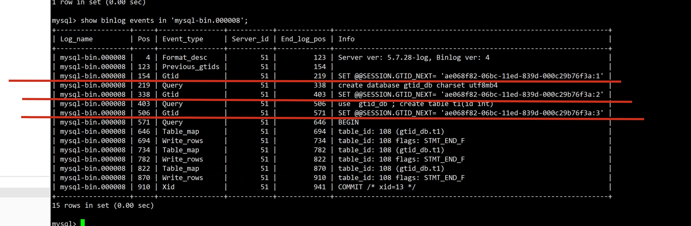
7.6 基于GTID截取日志
有了gtid之后，再也不用关心日志的开始pos，结束pos了，一个gtid记录，记录一个事务。
# 注意参数的添加，--skip-gtids ，不加mysql会进行gtid记录的幂等性检查，导入sql会报错
# 导出从建库，创建数据，的所有gtid记录，不需要记录pos了
mysqlbinlog --skip-gtids --include-gtids='ae068f82-06bc-11ed-839d-000c29b76f3a:1-3' /www.yuchaoit.cn/mysql_3306/logs/mysql-bin.000001 > /tmp/gtid_t1.sql
7.7 基于gtid记录的数据恢复
1.删除数据库试试
mysql> drop database gtid_db;
Query OK, 1 row affected (0.00 sec)
# 删除动作也是一个事务
mysql> show master status;
+------------------+----------+--------------+------------------+------------------------------------------+
| File | Position | Binlog_Do_DB | Binlog_Ignore_DB | Executed_Gtid_Set |
+------------------+----------+--------------+------------------+------------------------------------------+
| mysql-bin.000001 | 1107 | | | ae068f82-06bc-11ed-839d-000c29b76f3a:1-4 |
+------------------+----------+--------------+------------------+------------------------------------------+
1 row in set (0.00 sec)
# 查看binlog的事件
mysql> show binlog events in 'mysql-bin.000001';
2.恢复数据，注意关闭二进制日志的记录
set sql_log_bin=0;
source /tmp/gtid_t1.sql;
set sql_log_bin=1;
7.8 重置gtid，清理binlog日志
RESET MASTER可以用来清除GTID的执行历史，全部清空。危险命令。。
删除某个日志
清除二进制日志需要BINLOG_ADMIN特权。
如果未使用--log-bin选项启动服务器以启用二进制日志记录，则此语句无效。
Examples:
PURGE BINARY LOGS TO 'mysql-bin.010';
PURGE BINARY LOGS BEFORE '2019-04-02 22:46:26';
7.9 binglog刷新
mysql> flush logs;
shell> mysqladmin flush-logs
shell> mysql -e "flush logs"
shell> mysqldump -F
# 自动刷新，max_binlog_size 超过binlog的容量后，自动刷新新日志 默认1G ，单位bytes
# https://dev.mysql.com/doc/refman/5.7/en/replication-options-binary-log.html`
mysql> select @@max_binlog_size;
+-------------------+
| @@max_binlog_size |
+-------------------+
| 1073741824 |
+-------------------+
1 row in set (0.00 sec)
7.10 日志自动删除
# 常见做法是备份7天
mysql> show variables like '%expire%';
+--------------------------------+-------+
| Variable_name | Value |
+--------------------------------+-------+
| disconnect_on_expired_password | ON |
| expire_logs_days | 0 |
+--------------------------------+-------+
2 rows in set (0.00 sec)
# 设置
set GLOBAL expire_logs_days=7;
8.mysql日志管理
日志的作用，不说大家应该都知道，可以收集、检测我们程序的健康状况
默认这些日志，大部分是未开启的，运维小于可以通过命令、配置文件，开启这些日志，以及定义存储路径。
mysql日志文件的作用：
1、能记录物理数据页面的修改的信息；
2、能将数据从逻辑上恢复至事务之前的状态；
3、能以二进制文件的形式记录了数据库中的操作；
4、能记录错误的相关信息；
5、能从主服务器中二进制文件取的事件等等。
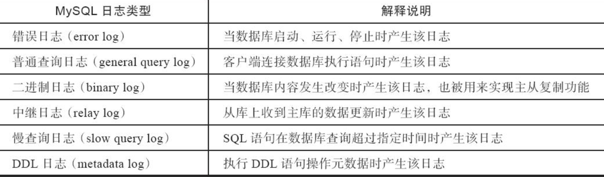
普通日志
记录了服务器接收到的每一个查询或是命令，无论这些查询或是命令是否正确甚至是否包含语法错误，general log 都会将其记录下来 ，记录的格式为 {Time ，Id ，Command，Argument }。
也正因为mysql服务器需要不断地记录日志，开启General log会产生不小的系统开销。 因此，Mysql默认是把General log关闭的。
mysql> show variables like 'general_log%';
+------------------+---------------------------------------+
| Variable_name | Value |
+------------------+---------------------------------------+
| general_log | OFF |
| general_log_file | /www.yuchaoit.cn/mysql_3306/db-51.log |
+------------------+---------------------------------------+
2 rows in set (0.01 sec)
可以开启该功能，命令临时修改
mysql> set global general_log = on;
Query OK, 0 rows affected (0.00 sec)
mysql> set global general_log = on;
Query OK, 0 rows affected (0.00 sec)
mysql> show variables like 'general_log%';
# 永久配置，则写入my.cnf即可
对于普通日志的功能，一般都是关闭的，查询日志的信息量很大，网站用户的海量请求，日志频繁写入，对于磁盘的IO影响很大。
但是对于网访问量不大，并且企业对于SQL审计要求较高，可以开启该功能
二进制日志binlog
binlog是记录数据库被修改的SQL语句，对数据造成影响了。
一般是DDL和DML语句，包含
- insert
- update
- delete
- create
- drop
- alter
- 等关键字
作用
记录mysql数据的增量数据，且用来做增量数据恢复，前面超哥已经完整的讲过、全量备份、增量备份的区别，如果不开启binlog，将无法恢复完整的数据。
以及用在主从数据复制
二进制binlog索引文件
该文件用于记录binlog的索引号
[root@db-51 ~]#cat /www.yuchaoit.cn/mysql_3306/logs/mysql-bin.index
/www.yuchaoit.cn/mysql_3306/logs/mysql-bin.000001
慢查询日志
慢查询日志（slow query log）用于记录执行时间拆过指定值（long_query_time）或者没有使用索引、结果集大于1000行的SQL语句。
慢日志参数
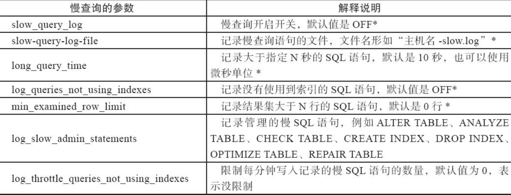
慢查询参数调整，是数据库SQL优化重要手段